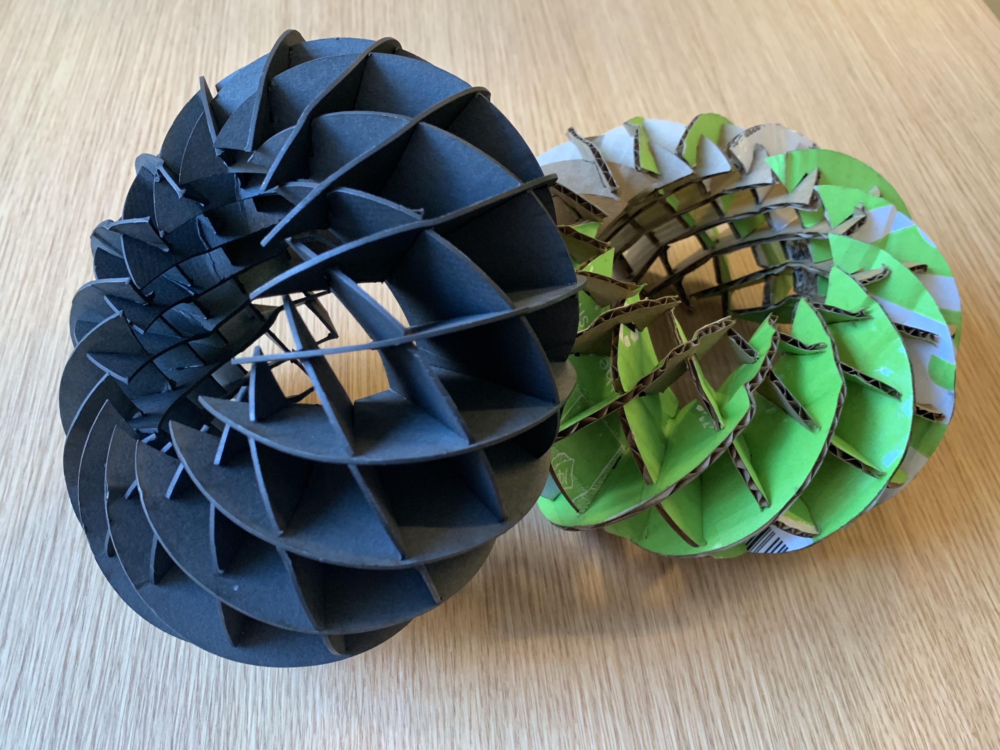
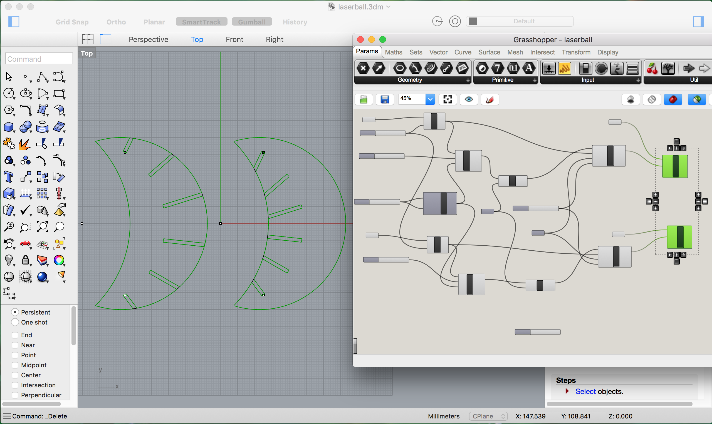
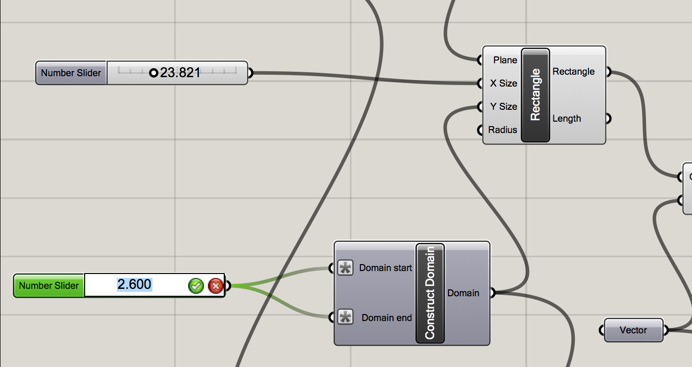
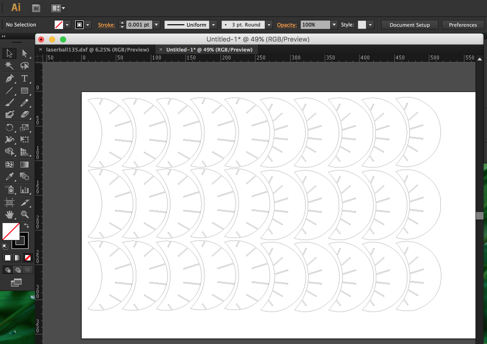
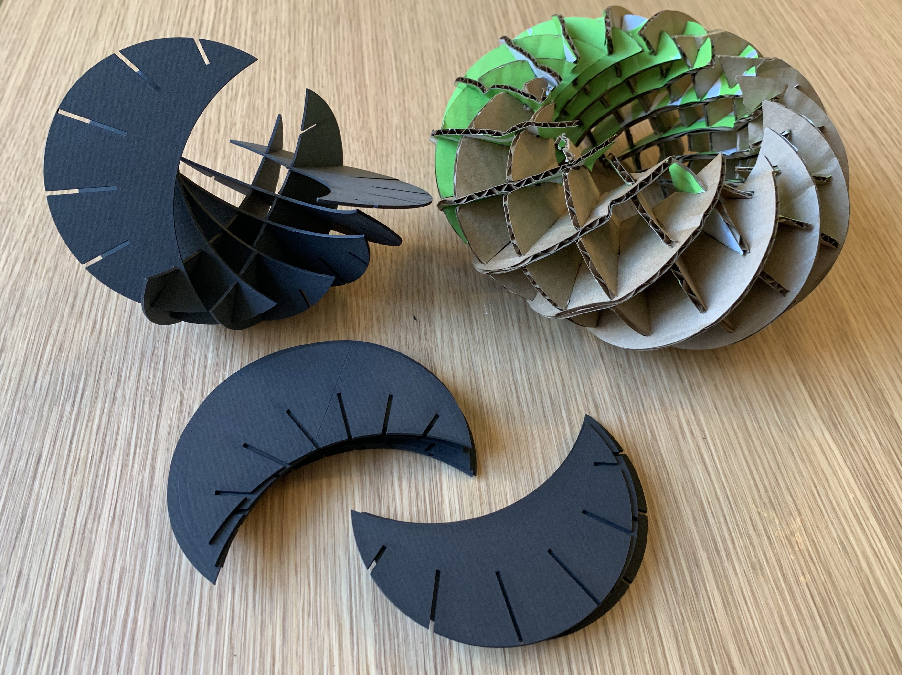

A2: CAD Model + Fabricated Output!
by Kellie Dunn for HCDE 598
Here are my finished and assembled Press Fit Kits, versions 2 and 3:

The first one (from last week) was made of 3.8mm cardboard. These new ones are 1.35mm (the black one) and 2.6mm (the green and brown one.)
Each kit still contains 16 each of two shapes.
I started by importing my previous AI file into Rhino, and using it as a template to make a new model.
When I tried to create the shapes in Grasshopper, I had problems with the Curve Array tool. Even after some research and getting help in office hours, I was still unable to make it work correctly in Grasshopper (I was able to model it fine in Rhino, but couldn't recreate it in Grasshopper...)
Ultimately, I ended up approximating the best I could with the Circular Array tool instead. It isn't exactly like my last model-- the angle and placement of the slots is slightly different-- but it's close enough to still work.

For each model, I used calipers to measure my cardboard dimensions and width in millimeters, and used the number slider in my Grasshopper model to resize the slots so they would fit snugly. By using Construct Domain, at the suggestion of helpful classmates on Slack, the width of the rectangles can be resized proportionately from the center.

For each size version, I baked my corrected shapes in Grasshopper into a layer in Rhino, selected the shapes in Rhino, and exported the selection as one .dxf file.I opened each file in Illustrator, created an artboard the size of my cardboard, corrected the size of the image from Rhino when necessary, set the line width to 0.001, and copy-pasted the shapes until I had enough for my model plus a few extra.

On the laser cutter, I used the following settings for both models: speed 40, power 90, freq 50.

Assembling the models!

Documentation for Assignment 1:
1.35mm Adobe Illustrator file
2.60mm Adobe Illustrator file
1.35mm Rhino file
1.35mm Rhino file
Grasshopper file
Acknowledgements:
Joshua for patient Grasshopper help!
Julie for moral support!
Lukas for Grasshopper help and laser cutter chat!
Elizabeth for Grasshopper help on Slack!